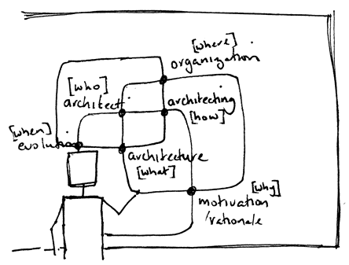
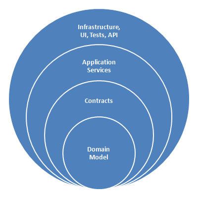
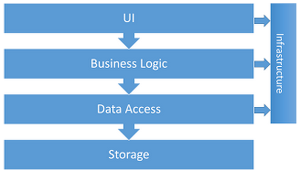
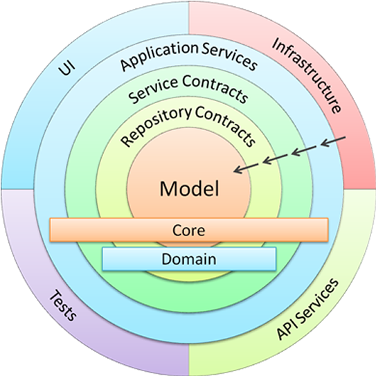
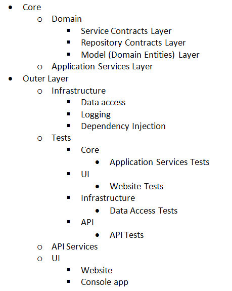
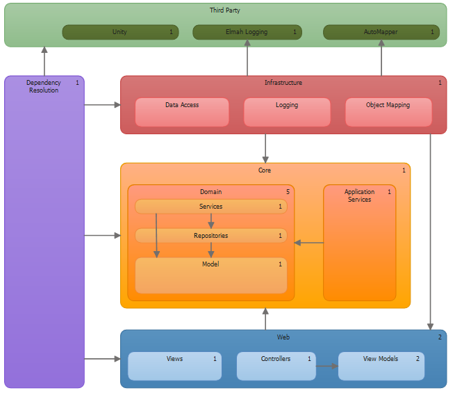
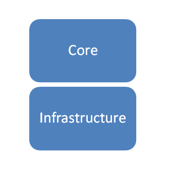
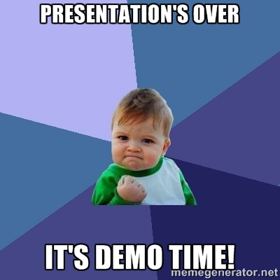

Your browser doesn't support the features required by impress.js, so you are presented with a simplified version of this presentation.
For the best experience please use the latest Chrome, Safari or Firefox browser.
Welcome
Onion Architecture
No this kind of architecture!
What is Architecture?

Onion Architecture Principles

Benefits
- Loose coupling
- Testable
- Maintainable
- Business logic independent of infrastructure (Database, UI, services, etc)
- Business logic focuses on business problem, not on infrastructure concerns
- The Application structure is easier to follow
- Compiler enforces dependencies, cannot reference code on outer layers from inner layers
Traditional N-Layer Architecture

Spaghetti Architecture
Why Onions?
Bring the onion

Onion Architecture - The Onion

Onion Architecture

Onion Architecture - Layers view

Onion Architecture - Review


Thank you